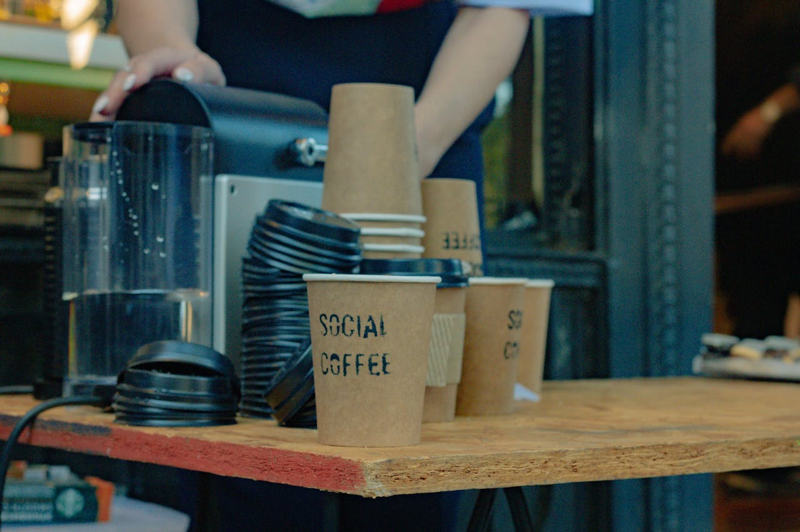

01 / COFFEE
Classic Latte
Smooth, creamy and made for slow mornings.
$5COFFEE · BREAKFAST · COMMUNITY
Life moves a little slower by the water. Stay for the coffee, come back for the feeling.
Explore the menuHELLO FROM THE COAST
Brewed fresh by the beach, this café concept brings a little sunshine to every cup and plate.
Comfort food, proper coffee and the simple pleasure of having nowhere else to be.
See what's on the menu ↗
A DESIGN CONCEPT
Gold Coast Café is an example website, not a live venue. To explore more of the work behind it, return to the main portfolio.
Back to selected work